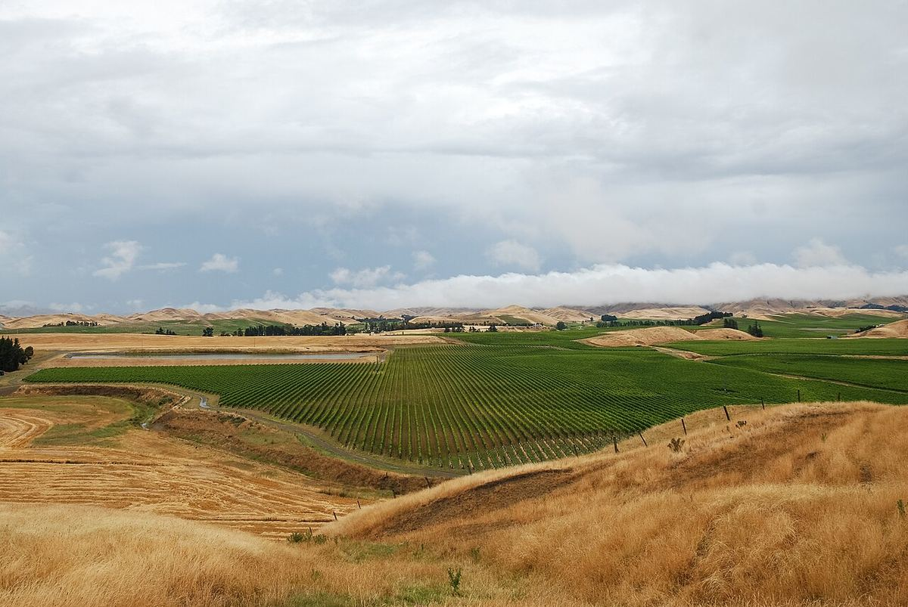

WHITE
Home › New Zealand › Marlborough
Geographical Indication (GI)Marlborough
Marlborough, at the north-eastern tip of the South Island, is New Zealand’s largest wine region. Its intensely aromatic Sauvignon Blanc brought international fame to New Zealand wine.

History
Although there were small vineyards in Marlborough in the nineteenth century, the area was devoted mainly to sheep farming and other crops when, in 1973, the Montana company planted its first commercial vineyards there. Many doubted at the time that grapes could ripen so far south, but the first Sauvignon Blancs, bottled at the end of the 1970s, were striking for their aromatic intensity. In the mid-1980s the founding of Cloudy Bay and the success of its wines in the United Kingdom and other markets turned the Marlborough style into a worldwide reference.
Since then the vineyard area has grown spectacularly, and Marlborough today accounts for most of New Zealand’s vineyards and a very high proportion of its exports. Alongside the large companies, numerous family wineries work in the region, as well as growers who sell their grapes. The town of Blenheim is the centre of the region.
Climate and soils
Marlborough is one of the sunniest areas in the country. The surrounding mountains shelter it from the moist westerly winds, so the climate is relatively dry, with bright, warm days and cool nights during ripening. This temperature range preserves the grapes’ acidity and intense aromas. The vineyards are spread across three main areas: the Wairau valley, the largest, with stony, well-drained alluvial soils mixed with more fertile silts; the Southern Valleys, small side valleys with more clay; and the Awatere valley, further south, higher, windier, drier and cooler, whose wines are often described as more herbaceous and saline.
Styles
Marlborough Sauvignon Blanc is dry, with lively acidity and very expressive aromas of citrus, passion fruit, gooseberry, green pepper and freshly cut grass. Most is made in stainless steel to retain freshness and is drunk young, but there are also versions fermented with native yeasts or in barrel, with a richer texture. Pinot Noir is the second most important variety, especially in the Southern Valleys, and gives fresh, aromatic reds with red fruit. Chardonnay, Pinot Gris, Riesling and traditional-method sparkling wines are also made, the last being a category in which the region has long experience. Most wines are sold under the regional name, although more and more producers also state the valley or vineyard of origin.
Wines · Marlborough
RED
Clos Henri Estate Pinot Noir
See profile & where to buy ↗WHITE
Clos Henri Estate Sauvignon Blanc
See profile & where to buy ↗WHITE
Clos Henri Otira Single Vineyard Sauvignon Blanc
See profile & where to buy ↗RED
Clos Henri Waimaunga Single Vineyard Pinot Noir
See profile & where to buy ↗WHITE
Cloudy Bay Chardonnay
See profile & where to buy ↗RED
Cloudy Bay Pinot Noir
See profile & where to buy ↗WHITE
Cloudy Bay Sauvignon Blanc
See profile & where to buy ↗WHITE
Cloudy Bay Te Koko
See profile & where to buy ↗RED
Dog Point Pinot Noir
See profile & where to buy ↗WHITE
Dog Point Sauvignon Blanc
See profile & where to buy ↗WHITE
Dog Point Section 94
See profile & where to buy ↗WHITE
Fromm Sauvignon Blanc
See profile & where to buy ↗RED
Greywacke Pinot Noir
See profile & where to buy ↗WHITE
Greywacke Sauvignon Blanc
See profile & where to buy ↗WHITE
Greywacke Wild Sauvignon
See profile & where to buy ↗WHITE
Henri Bourgeois Clos Henri Estate Sauvignon
See profile & where to buy ↗WHITE
Hunter's Riesling
See profile & where to buy ↗WHITE
Hunter's Sauvignon Blanc
See profile & where to buy ↗WHITE
Kim Crawford Sauvignon Blanc
See profile & where to buy ↗WHITE
Marlborough Sounds Sauvignon Blanc
See profile & where to buy ↗WHITE
Misty Cove Estate Sauvignon Blanc
See profile & where to buy ↗WHITE
Misty Cove Landmark Chardonnay
See profile & where to buy ↗WHITE
Orchard Lane Sauvignon Blanc
See profile & where to buy ↗RED
Oyster Bay Pinot Noir
See profile & where to buy ↗WHITE
Oyster Bay Sauvignon Blanc
See profile & where to buy ↗WHITE
Seresin Chardonnay
See profile & where to buy ↗RED
Seresin Leah Pinot Noir
See profile & where to buy ↗WHITE
Seresin Sauvignon Blanc
See profile & where to buy ↗WHITE
Te Whare Ra Gewurztraminer SV 5182
See profile & where to buy ↗RED
Villa Maria Private Bin Pinot Noir
See profile & where to buy ↗WHITE
Villa Maria Private Bin Sauvignon Blanc
See profile & where to buy ↗WHITE
Villa Maria Reserve Wairau Valley Sauvignon Blanc
See profile & where to buy ↗WHITE